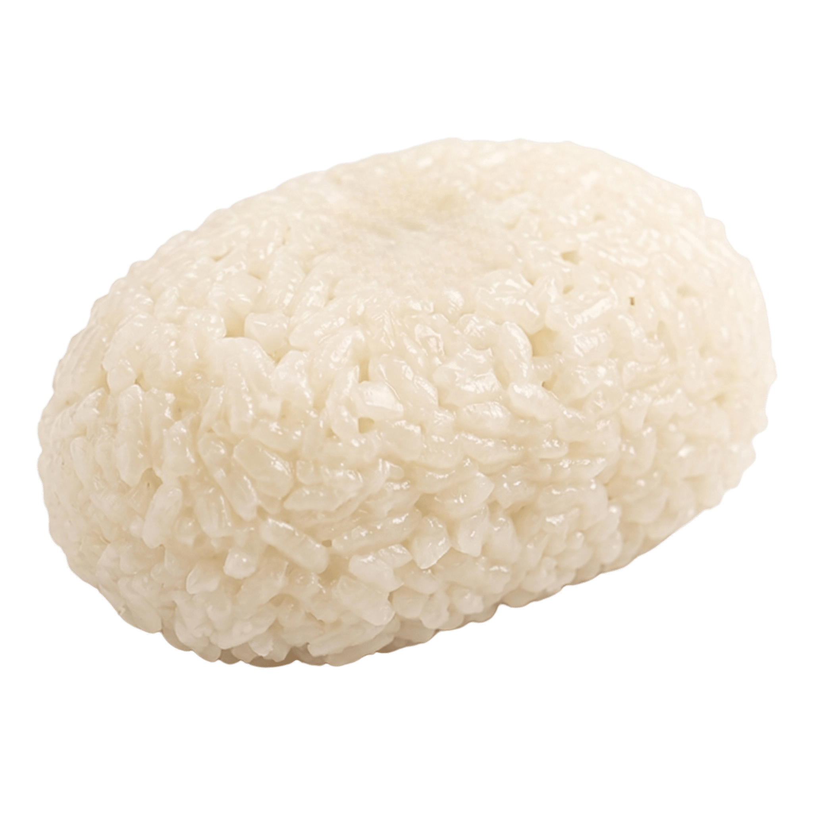
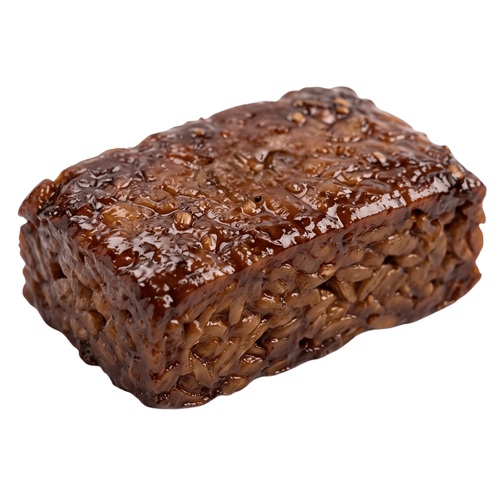

Jadah Tempe

Jadah tempe adalah jajanan khas Kaliurang, lereng selatan Gunung Merapi. Sepasang yang tak terpisahkan: jadah — ketan yang ditumbuk bersama parutan kelapa hingga gurih dan legit — disandingkan dengan tempe bacem yang direbus perlahan dalam gula jawa dan rempah hingga cokelat mengilap. Konon, kudapan ini menjadi kegemaran Sri Sultan Hamengku Buwono IX, dan sejak itu melekat sebagai oleh-oleh wajib dari kesejukan Kaliurang.

Beras ketan dikukus, lalu ditumbuk dengan kelapa parut dan sejumput garam. Hasilnya padat namun lembut — gurih samar yang menjadi kanvas bagi rasa manis di bawahnya. Paling nikmat saat masih hangat dan sedikit lengket di jari.

Tempe direndam dan direbus lama dalam air kelapa, gula jawa, bawang, ketumbar, dan daun salam, kemudian digoreng sebentar. Manis-gurih yang dalam, dengan aroma karamel rempah yang khas dapur Jawa.
Jepit tempe bacem di antara — atau di bawah — potongan jadah, seperti "sandwich" ala lereng Merapi.
Kontras gurih ketan dan manis bacem paling terasa saat baru diangkat dari tampah.
Teh panas, legi (manis), dan kentel — pasangan klasik di udara dingin pegunungan.
Jadah tempe paling lengkap disantap sambil memandang Merapi dari beranda warung.
Kaliurang berada sekitar 25 km di utara Kota Yogyakarta, pada ketinggian ±900 meter — kawasan wisata berhawa sejuk dengan hutan pinus dan kabut pagi. Di sepanjang jalannya, warung-warung legendaris masih menumbuk jadah dengan cara lama dan membacem tempe semalaman, menjaga rasa yang sama sejak puluhan tahun silam.
"Sing sabar, jadahnya masih ditumbuk."